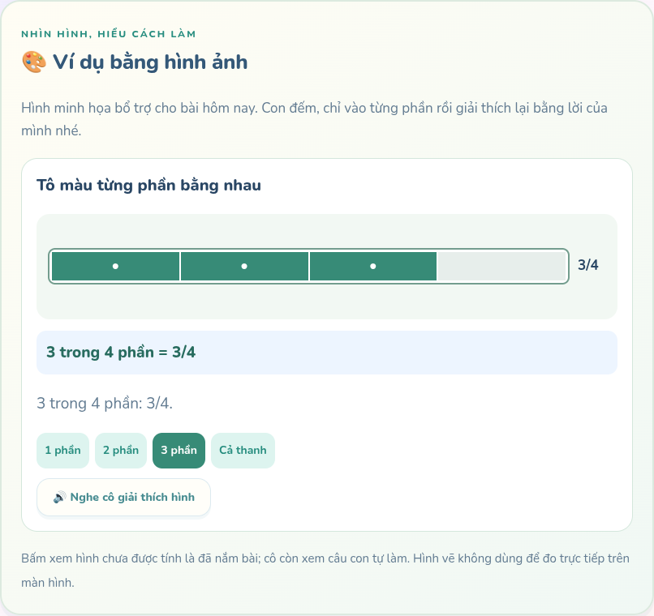
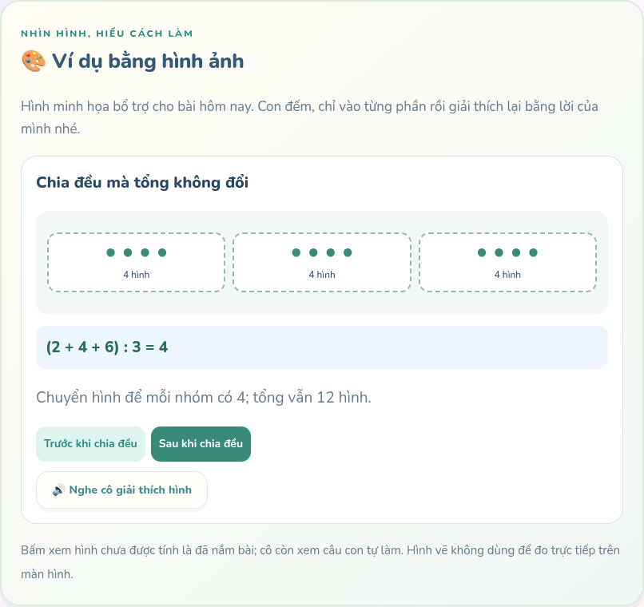
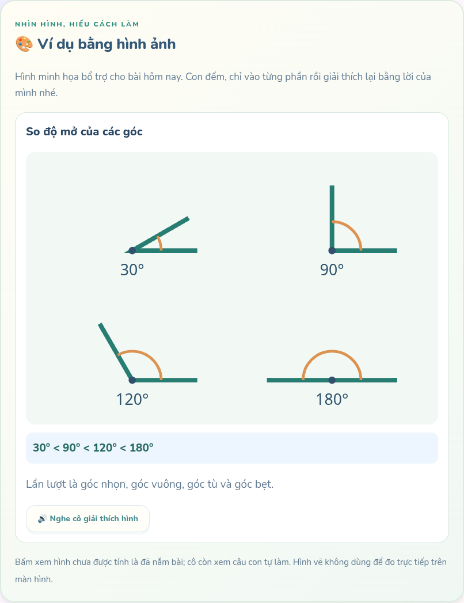
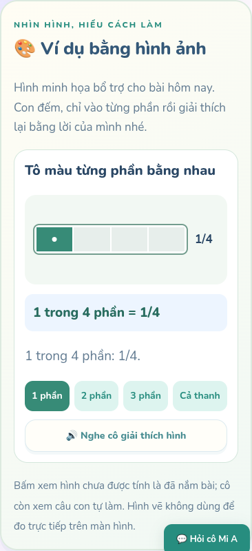

Thông báo tin riêng và ví dụ bằng hình
Ảnh kiểm thử bằng tài khoản và lời nhắn minh họa, không dùng dữ liệu học sinh thật.
Mở ứng dụng →Thông báo ở menu/thanh đầu và nút vào học lớn
Bấm tô từng phần để hiểu phân số

Chia đều để hiểu trung bình cộng

Nhìn độ mở của các góc

Hình minh họa trên điện thoại
